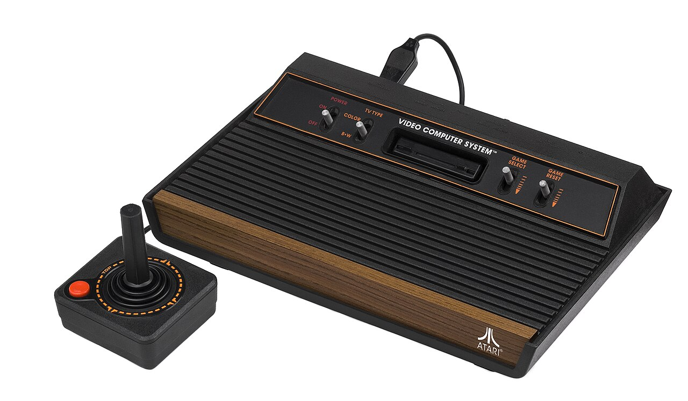
Released 1977
Atari 2600
The wood-paneled box that started it all at home. Swappable cartridges meant one console could hold a whole shelf of adventures, and a single joystick button was all you needed.
Read the Atari 2600 storyPlayer 1, welcome back
Save Point is a free, fan-built archive of gaming history. Pull up a beanbag and let us show you around.
Explore the Archive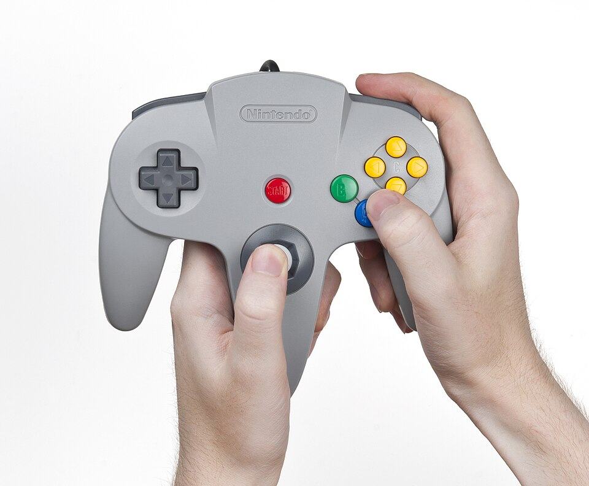
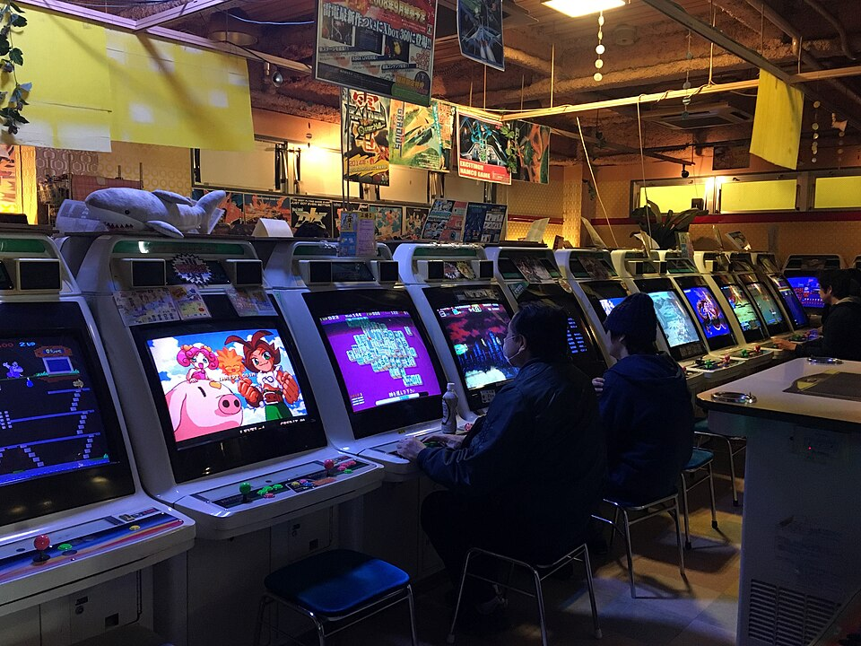
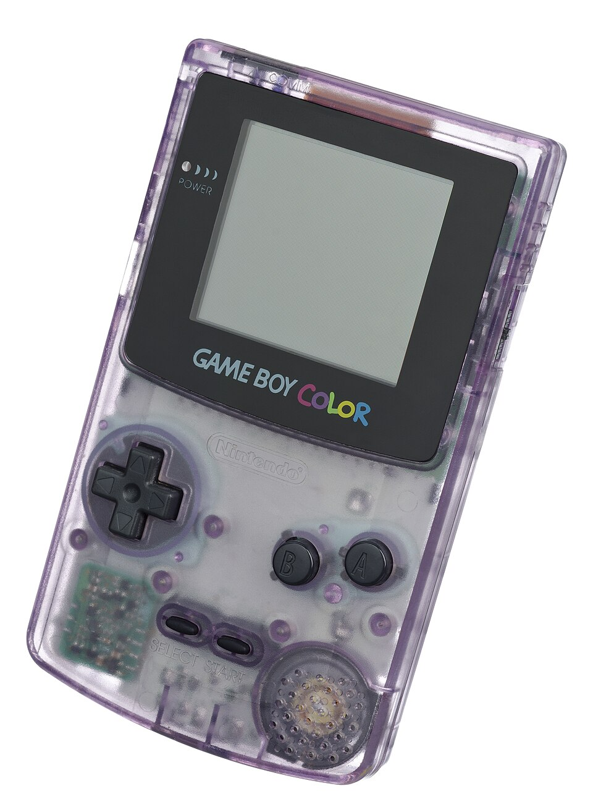
Level 1: The Eras
From simple arcade machines to the worlds we play in today. Pick an era and take a look around.
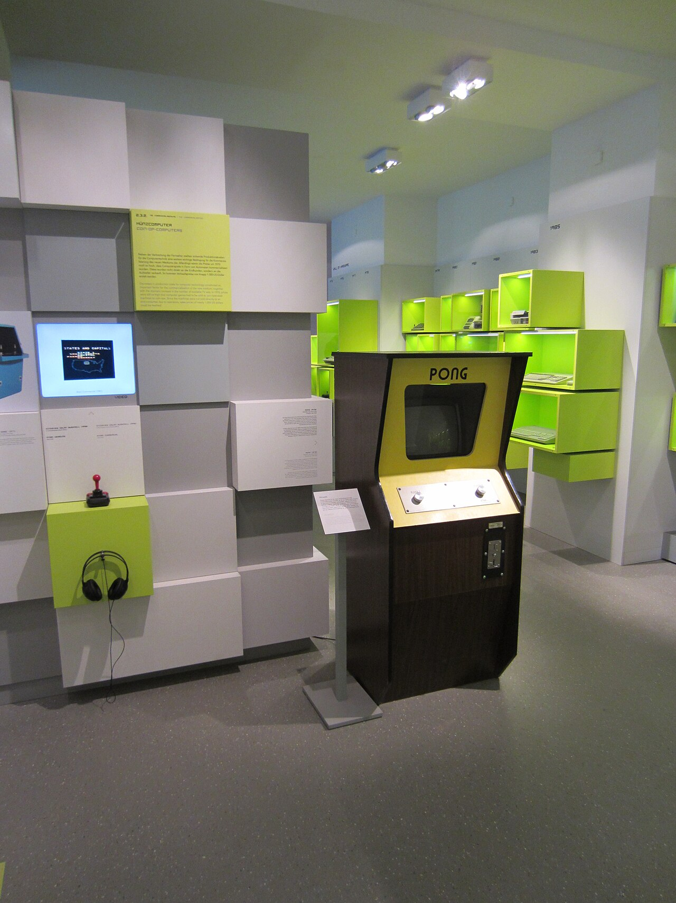
1972 to 1979
It started with two paddles and a square ball. Pong cabinets popped up in bars and bowling alleys, and by the end of the decade kids were lining up quarters on the glass to call "next" on Space Invaders.
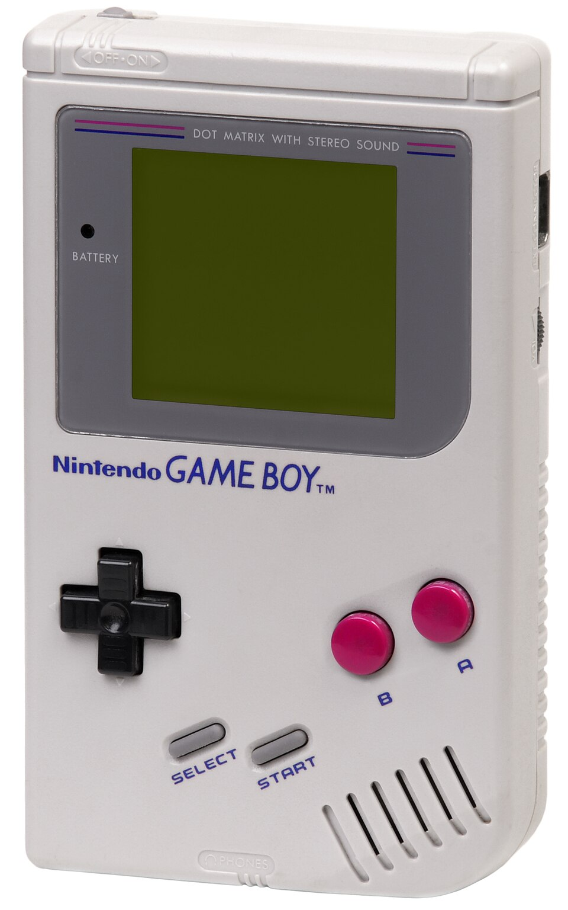
1980 to 1989
The '80s brought the arcade into the living room. After the crash of 1983, the NES got home consoles going again, and in 1989 the Game Boy put a whole world in your pocket, four AA batteries at a time.
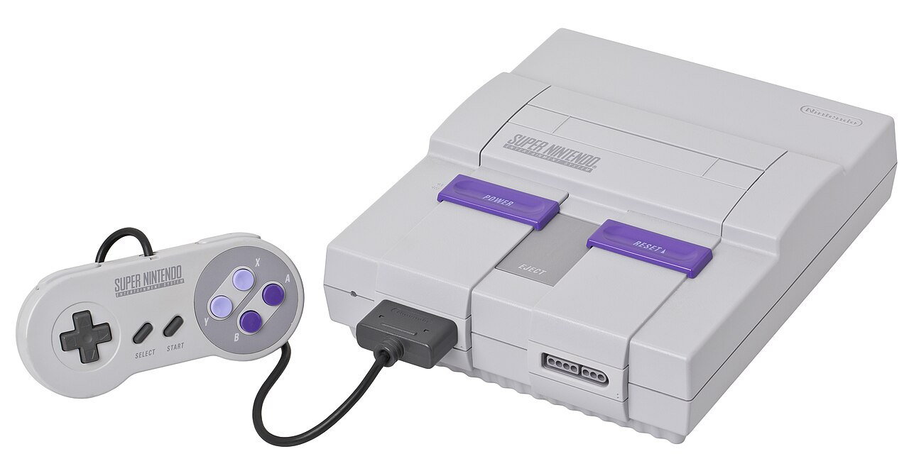
1990 to 1999
Two big leaps in one decade. 16-bit consoles gave us bold color and soundtracks we still hum, then polygons showed up and games stepped into 3D on the PlayStation and Nintendo 64.
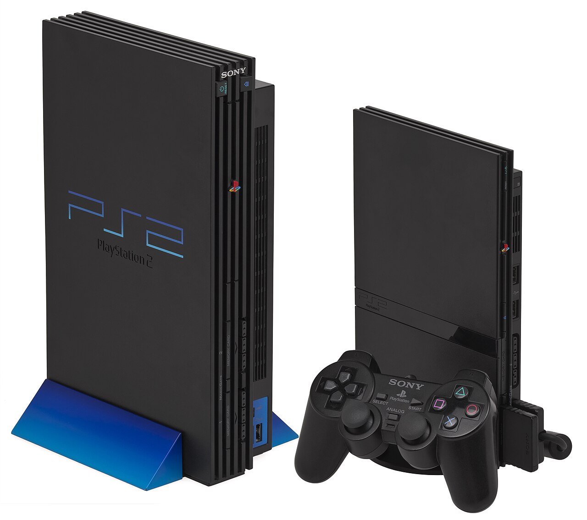
2000 to 2009
Memory cards packed with save files, first steps into online play, and some of the best-selling consoles ever made. The PlayStation 2, Xbox, and GameCube made sleepovers legendary, and the Wii got the whole family off the couch.
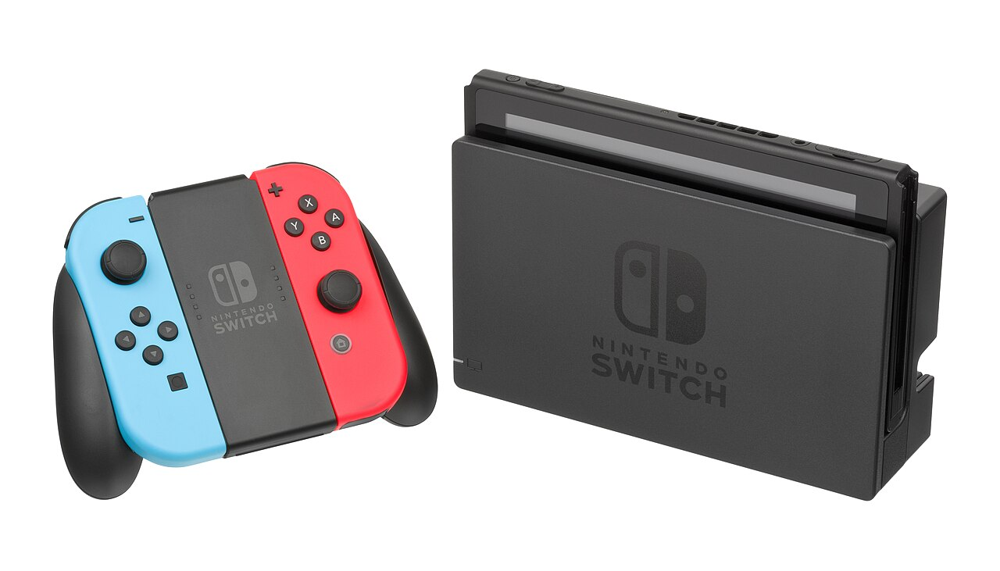
2010 and beyond
Worlds got enormous and games went everywhere. Small indie hits sat right next to blockbusters, and you could start a save on the TV and finish it on the bus.
Level 2: Classic Games
Three classics that started a million living-room arguments about whose turn it was.
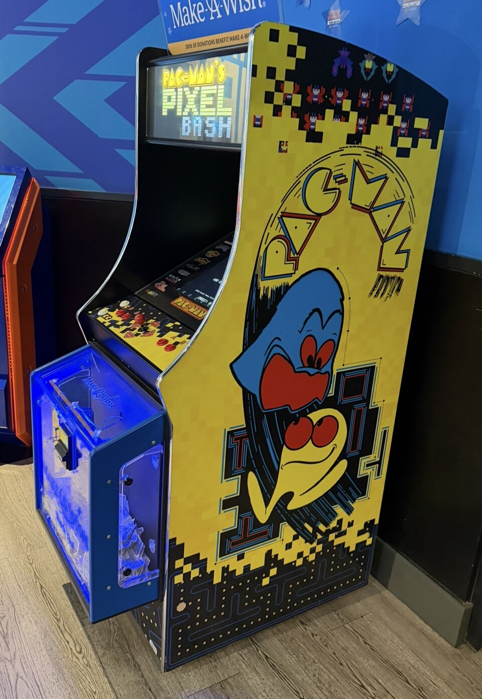
Every kid had a secret plan for dodging the ghosts, and every plan fell apart by level five.
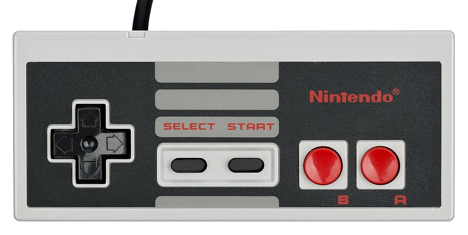
Plenty of us learned what a warp pipe was before we could spell "warp."
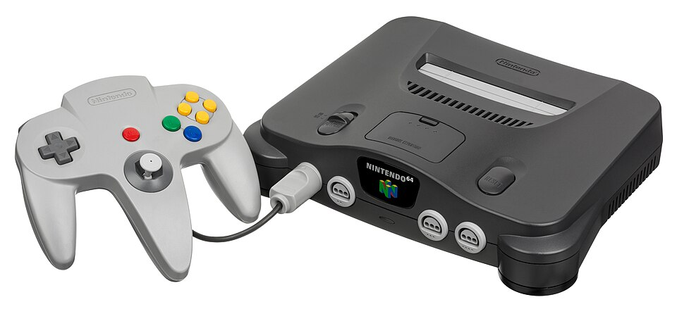
The first time you stepped out onto Hyrule Field, the whole world seemed to open up in front of you.
Level 3: The Consoles
The consoles that moved gaming out of the arcade and into our living rooms.

Released 1977
The wood-paneled box that started it all at home. Swappable cartridges meant one console could hold a whole shelf of adventures, and a single joystick button was all you needed.
Read the Atari 2600 story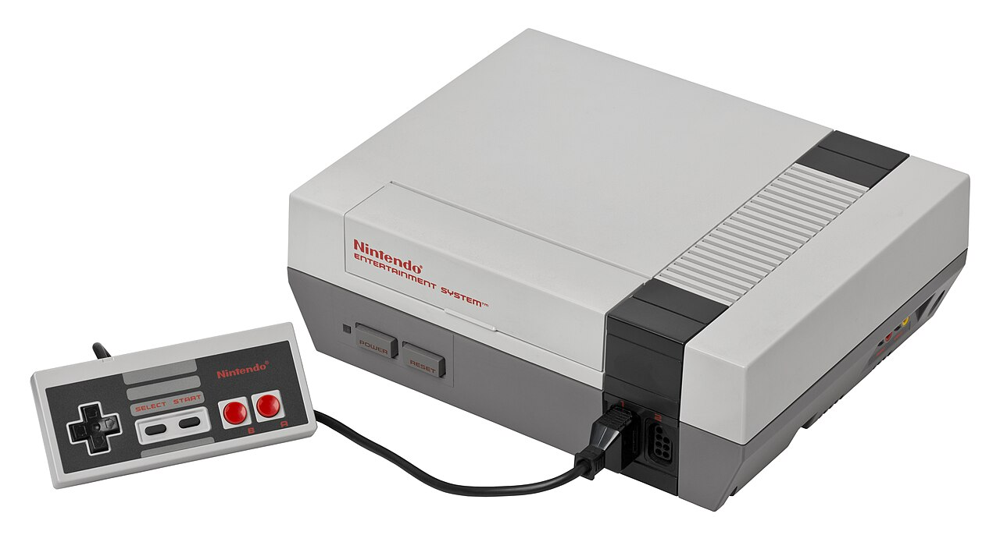
Released 1985
The gray box with the front-loading slot brought home gaming back to life. Blowing into the cartridge probably didn't help, but everyone did it anyway.
Read the NES story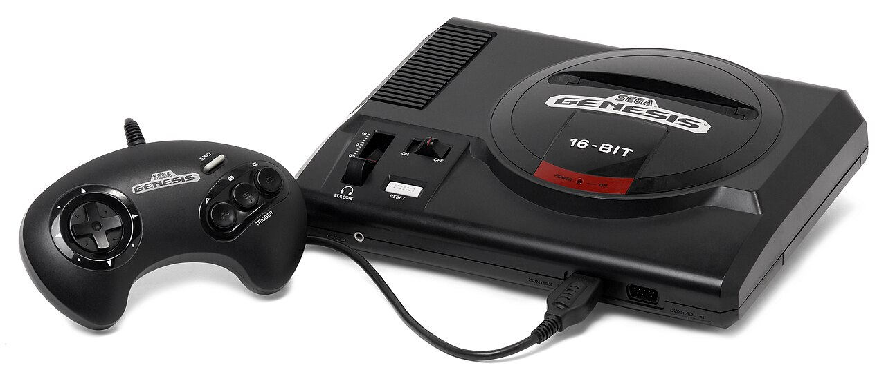
Released 1989
A speedy blue hedgehog and the loudest playground debates of the early '90s. The Genesis made gaming feel fast, loud, and just a little rebellious.
Read the Genesis story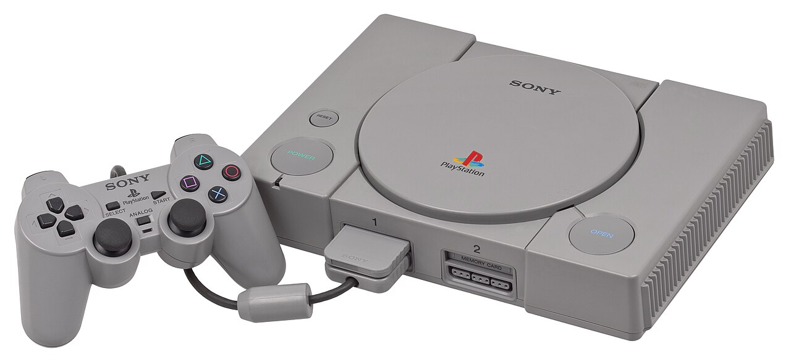
Released 1995
CDs instead of cartridges meant real soundtracks, full cutscenes, and memory cards guarded like treasure. It pulled a lot of teenagers and grown-ups into gaming for good.
Read the PlayStation storyLevel 4: The Archive
Decades of games, consoles, and stories, organized so they're easy and fun to browse.
Save Point is a free online archive for looking back. Think of it like a museum you can wander at your own pace, with the games we loved and the stories behind them.
Just so you know: this is not a store. Nothing here is for sale. No ads, no carts, no checkout. It's a place for remembering.
Jump to any decade and wander through the games that defined it, from coin-op cabinets to open worlds.
The story behind every machine: when it launched, what made it special, and the games that made us want one.
Stories from real players about the games that kept them up long past bedtime.
The archive grows from fan suggestions. If a game or console is missing, tell us and we'll add it.
Suggest a gameLevel 5: Fan Memories
Fans share the moments these games gave them: late nights, borrowed controllers, and save files that felt like treasure.
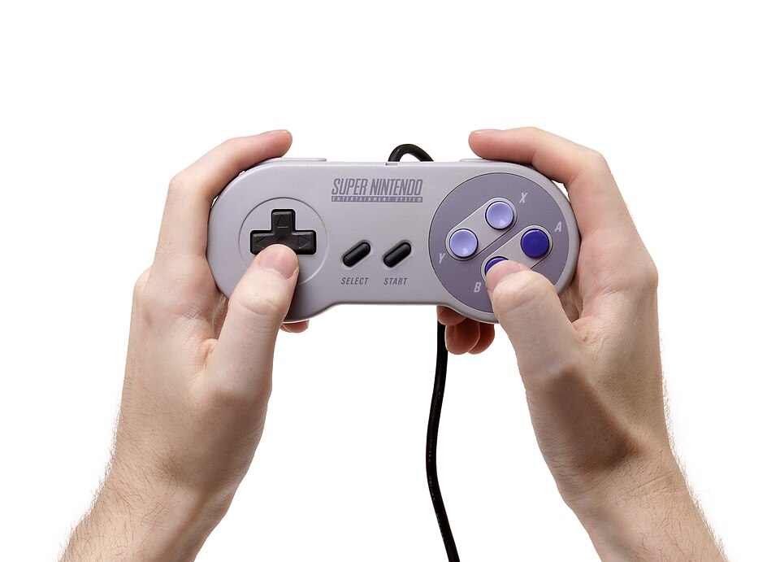
"My brother and I shared one controller and one save file of Chrono Trigger the whole summer of '95. I still know every note of that soundtrack."
"I found the Atari 2600 page and texted my dad a picture. He called ten minutes later to tell me how he beat his cousin at Combat in 1979. We talked for an hour."
4,812
memories shared by fans so far
"Seeing the old PlayStation memory card screen made me tear up a little. Twenty-some years later, I still remember which block held my Spyro save."
Final Level
Pick an era, find your old favorites, and remember why you fell in love with games in the first place.
Explore the ArchiveBonus Stage
Save Point is built from fan feedback. If your favorite game or console isn't here yet, send it our way. Every suggestion gets read, and the archive grows because of them.